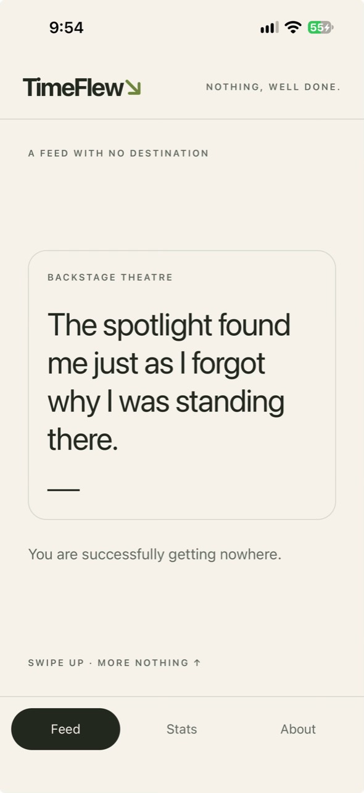
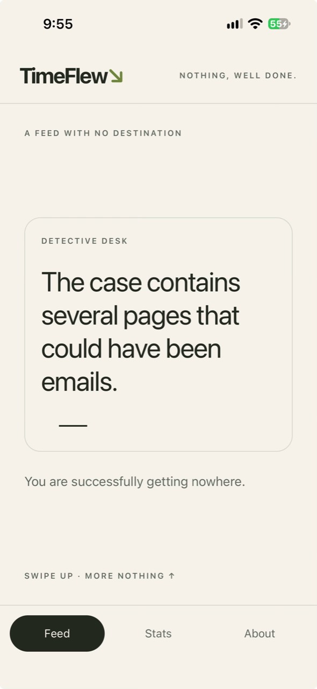
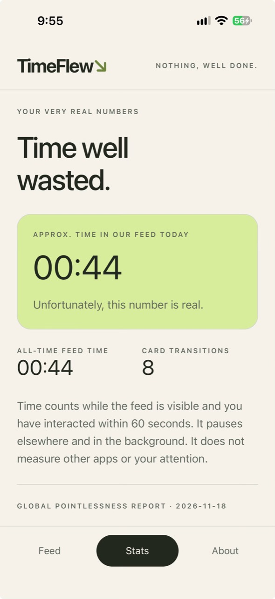

An offline humour app
A feed with
no destination.
Short absurd observations. Small surprises hiding sideways. Occasionally, a shape with no responsibilities.
Swipe up for another post. Swipe sideways to see where the sentence goes. Nothing to achieve. No streak to protect.
Take a small look ↓iPhone release in preparation. Android in closed testing.
No account · No ads · Works offline

A few actual observations
This is the general idea.
“This rock has absolutely no career plans.”
“A spoon continues to live in a drawer. More as this develops.”
“A sock is enjoying a solo career.”
Examples from the bundled collection. Written and edited for TimeFlew.
A little room for absolutely nothing
Over a thousand posts.
Remarkably little urgency.
More nothing, sideways.
Inside each bordered card, swipe left to reveal more sentences. Swipe right to retrace your lack of progress.
No attendance taken.
No score, streak or account. The collection is bundled in the app and reshuffles after each cycle.
A surprisingly honest counter.
Your approximate time in the feed stays on your device. It doesn't measure other apps or your attention.
Evidence of very little
This is what getting nowhere looks like.


Personal feed-time estimates are local. The country scrolling averages elsewhere in Stats are fictional entertainment values; population figures are estimates.
Reasonable questions
A small explanation.
What is TimeFlew?
A minimalist humour app with thousands of short posts, horizontal sentence reveals, hidden tap responses and occasional geometric artwork.
Does it work offline?
Yes. Text and shapes are bundled in the app. External support and privacy links use your browser and require a connection.
Does it need an account or contain ads?
The current version has neither. There are no tracking or analytics SDKs in the app.
Does it track my screen time?
It estimates time only in its own feed while visible and recently interacted with. It does not measure other apps or attention. Totals stay on your device.
Will the content repeat?
Yes. The finite collection reshuffles after each cycle. Additional sentences are drawn from shared topic pools.
Was AI used to create the text?
AI was consulted, yes! But the text was created by hand and edited for the app. There is no runtime AI generation.
Where can I download it?
The iPhone release is in preparation, and Android is in closed testing. Public download links will appear here when available.
TimeFlew
Nothing, well done.
Made by Tridip Choudhury. Questions? Get in touch.